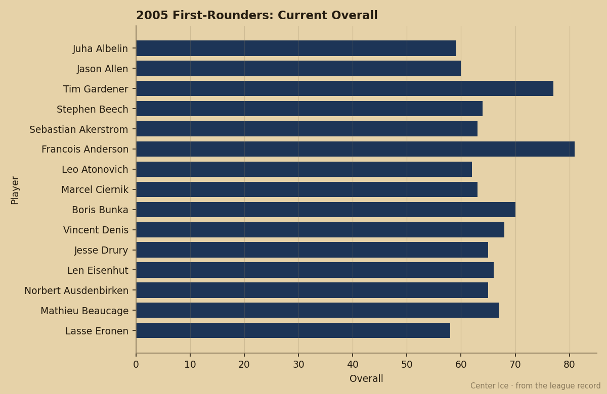
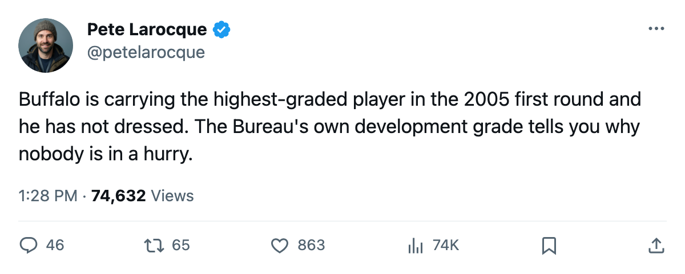
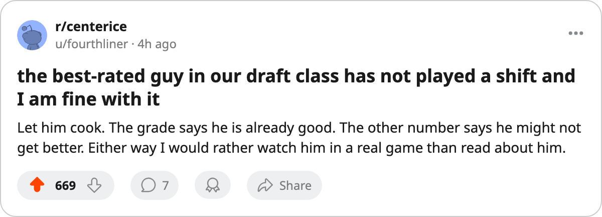

ATL
ATL DET
DET CBJ
CBJ MIN
MINBuffalo's 11th Pick Grades Highest in the 2005 First Round. He Has 0 Games.
Francois Anderson carries the best current grade in his round at 81 overall and one of its lowest development grades at 59.
 Pete LarocqueScouting editor · The Prospect File
Pete LarocqueScouting editor · The Prospect File
Francois Anderson78 has not played a game. The Book grades him 81 overall, the highest current grade of any man in the 2005 first round.
The same entry grades his potential 59, near the bottom of that round on the development number.  Buffalo Sabres holds the round's best player today and one the Bureau thinks is among its least likely to grow.
Buffalo Sabres holds the round's best player today and one the Bureau thinks is among its least likely to grow.
The Book's two numbers do different jobs. Overall is the grade today. Potential is the Bureau's likelihood of development, not a ceiling, and the two do not have to agree.

The round splits in two
| player | pick | overall | potential | gp | points |
|---|---|---|---|---|---|
| Francois Anderson | 2005 #11 (R1) | 81 | 59 | 0 | 0 |
| Tim Gardener75 | 2005 #5 (R1) | 77 | 98 | 4 | 0 |
| Leo Atonovich62 | 2005 #13 (R1) | 62 | 96 | 0 | 0 |
| Boris Bunka71 | 2005 #18 (R1) | 70 | 51 | 0 | 0 |
| Sebastian Akerstrom61 | 2005 #9 (R1) | 63 | 50 | 0 | 0 |
Gardener went 2005 #5 (R1) to  Toronto Maple Leafs at 77 overall and 98 potential, and he is the only first-rounder who has dressed: 4 games, 0 points, 5.3 minutes a night. Atonovich went 2005 #13 (R1) at 62 and 96 with a game yet to play.
Toronto Maple Leafs at 77 overall and 98 potential, and he is the only first-rounder who has dressed: 4 games, 0 points, 5.3 minutes a night. Atonovich went 2005 #13 (R1) at 62 and 96 with a game yet to play.
Anderson is the other arrangement. His 81 is the best current grade in the round. His 59 is low for it: Akerstrom went 2005 #9 (R1) at 63 overall with 50 potential, Bunka went 2005 #18 (R1) at 70 with 51.
The Bureau's under-23 list carries Anderson at 81 overall as a rookie, which puts the highest grade in his draft round beside names who have played full seasons.
The low number has not stopped anyone yet
Tuomo Pihlman76 is the reigning Calder winner. The Book grades the Minnesota forward 76 overall and 56 potential, below Anderson on that number, and he has 2 games and 1 point this season after taking the trophy as a rookie.
A development grade below 60 did not stop Pihlman. Anderson's 59 reads as the Bureau's view of how much of that 81 is already banked, not a warning for his season.
What Buffalo has is a 20-year-old with the best current grade in his class and no games. The Sabres are 3 games into their season at 1-1-0 with 4 points, 11 goals for and 9 against, and they hold 5 picks in the 2006 draft, one of them a first.
The Bureau will revise the Book. Anderson's 81 sits on it today, and so does the 59.

